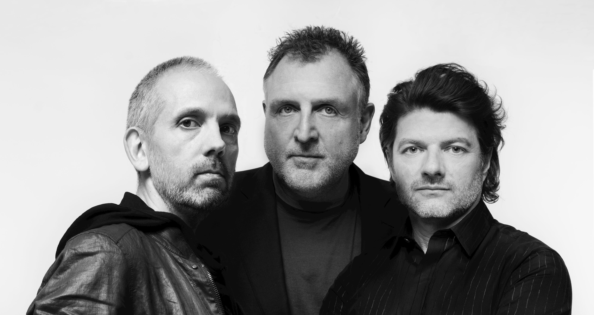
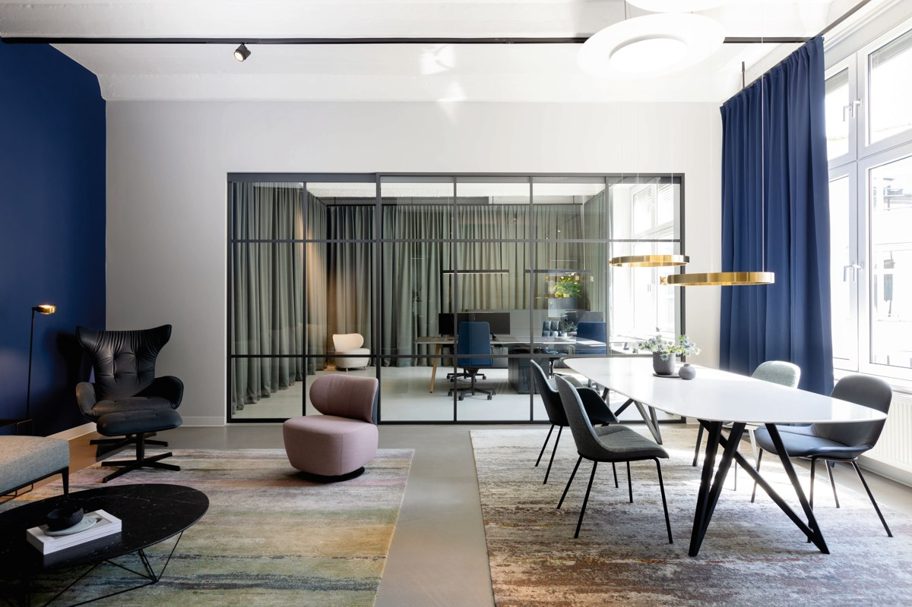
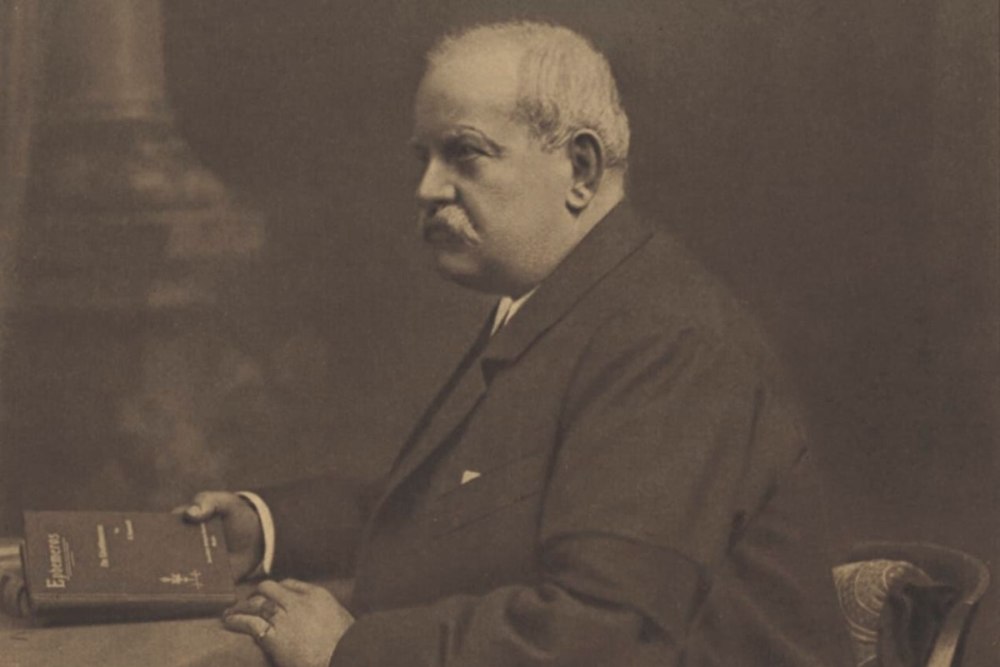
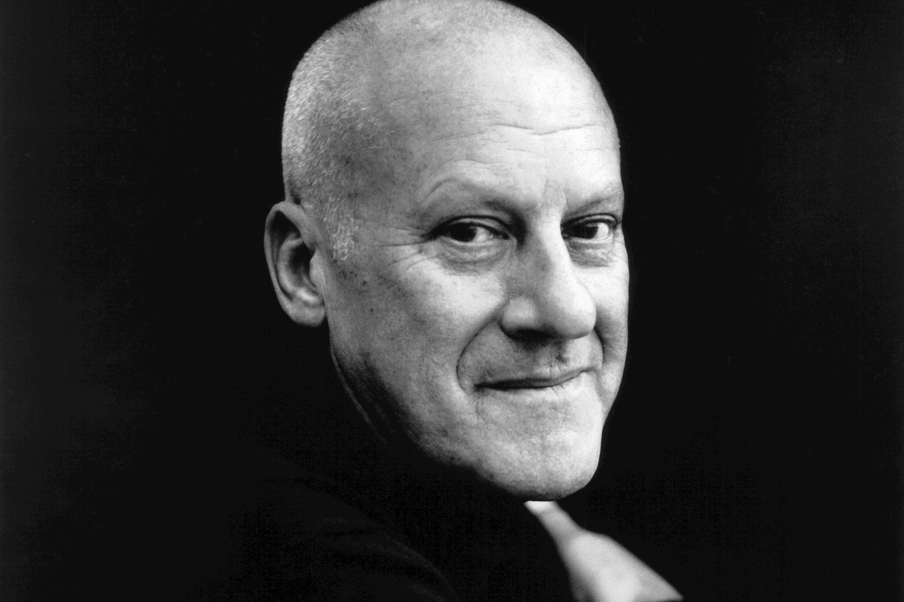

EOOS
A design studio with a thoughtful approach to form and experience.
Explore the collectionFurniture shapes the way we live. Discover a heritage of design and craftsmanship, from Stuttgart to the world.

Our Purpose
From a quiet moment at home to a conversation at work, furniture becomes part of everyday life. Our study explores the modern forms, natural materials and careful details that define Walter Knoll.
Explore our materialsA tradition of modernity

Wilhelm Knoll opens a leather business in Stuttgart.
Walter Knoll establishes his own furniture company.
The upholstered Vostra becomes part of the postwar collection.
Walter Knoll takes over Wilhelm Knoll and continues its collection.
Historical milestones: Walter Knoll history.
Different perspectives. A shared language.

A design studio with a thoughtful approach to form and experience.
Explore the collection
Architecture and industrial design in conversation.
Explore the collection